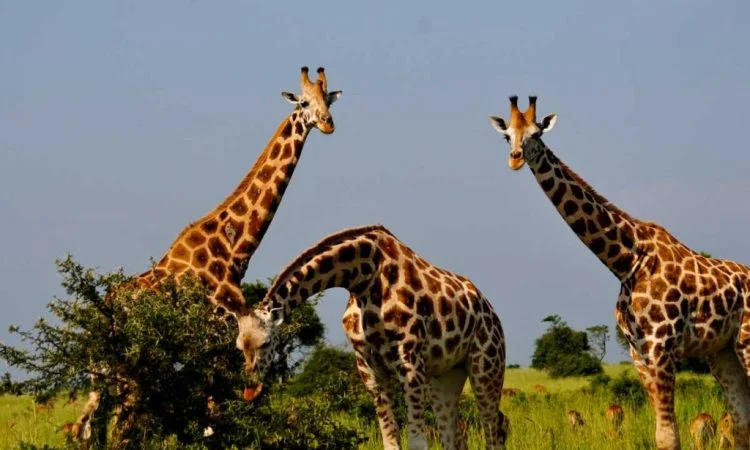
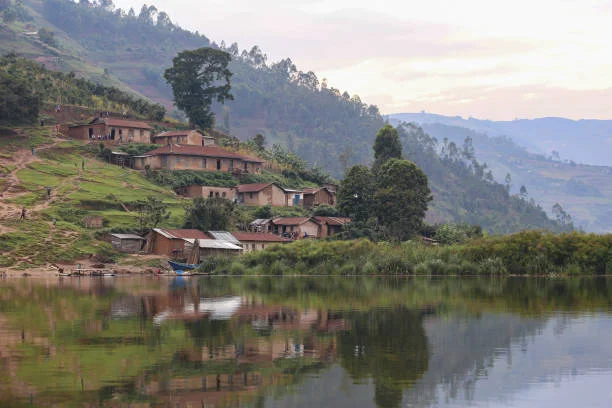
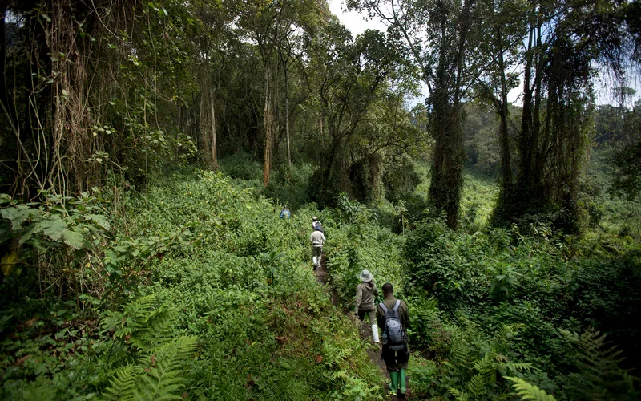
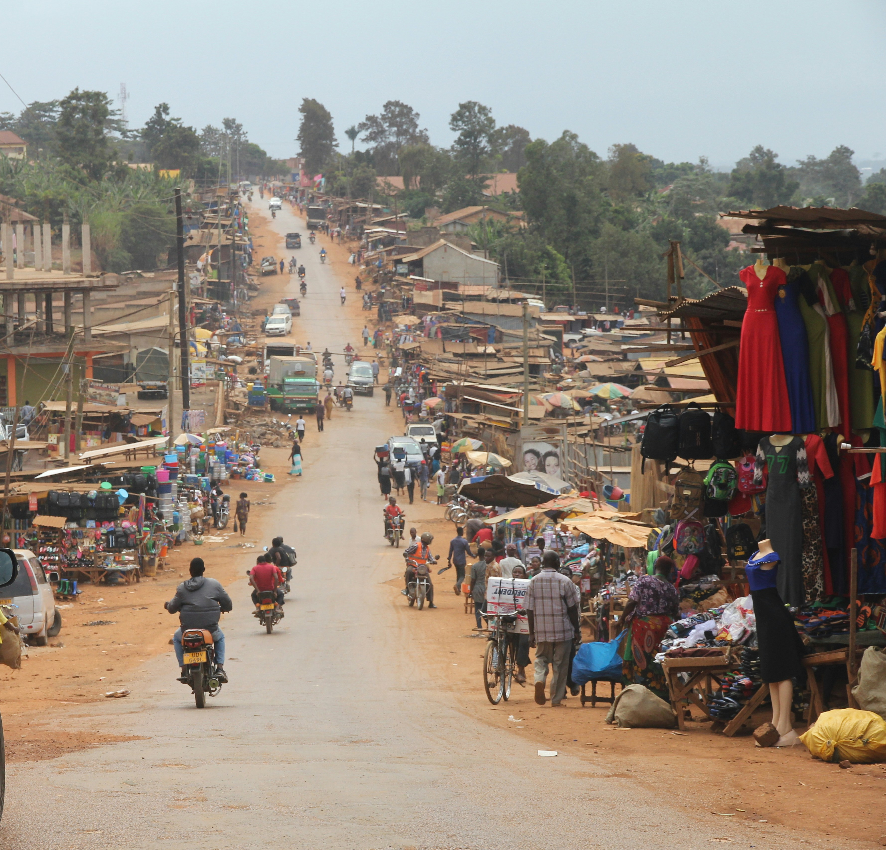
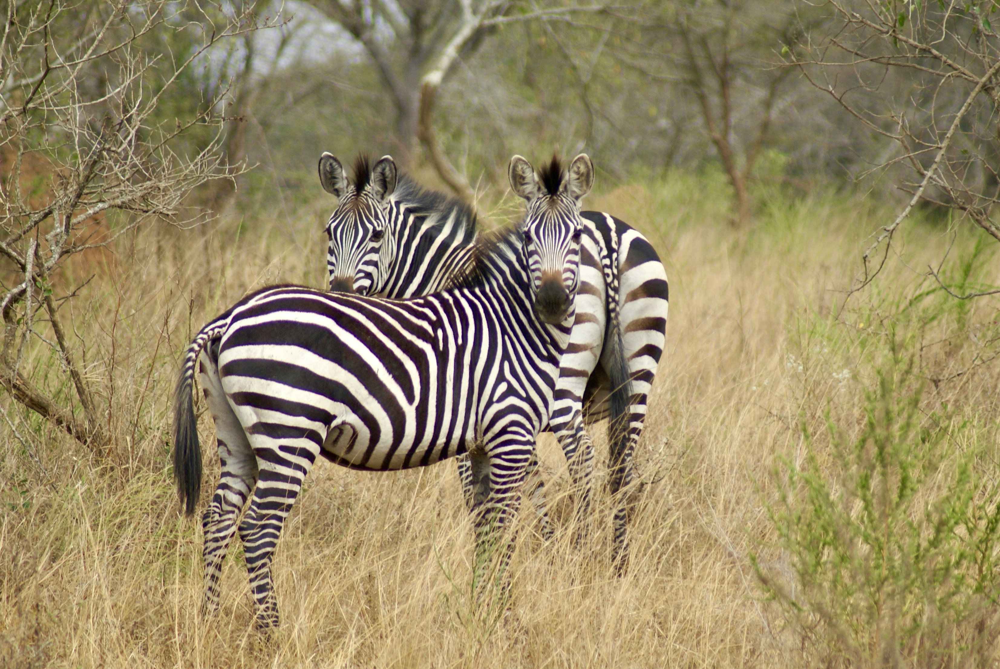

High-Intent Itineraries
These tours are built around the experiences travelers search for most, from gorilla trekking and chimpanzees to classic wildlife safaris.
Explore Uganda
Experience Uganda like never before with guided gorilla trekking, wildlife safaris, cultural adventures, and tailor-made itineraries.
These tours are built around the experiences travelers search for most, from gorilla trekking and chimpanzees to classic wildlife safaris.
Each route can be a starting point before moving into a custom plan based on trip length, preferred parks, and travel style.
You can cross-check destinations, practical travel guides, and the trip planner instead of making a booking decision in isolation.

Track mountain gorillas in Bwindi Impenetrable National Park with expert guides.

Explore Murchison Falls National Park on guided game drives and Nile boat safaris.

Enjoy boat rides, village visits, and scenic views at Lake Bunyonyi.

Witness lions, elephants, and hippos on a game drive and boat cruise.

Enjoy a primate-focused adventure through Kibale’s rich rainforest and birdlife habitats.

Take on one of Uganda’s most scenic mountain landscapes with guided trekking and photography stops.

Discover the capital’s markets, landmarks, cultural sites, and lively entertainment scene.

A relaxed short safari with wildlife viewing, a lake excursion, and easy nature experiences.
Use the destinations page to compare Bwindi, Murchison Falls, Queen Elizabeth, Kibale, and Lake Bunyonyi before you enquire.
Browse the travel blog for advice on permits, timing, packing, safari costs, and first-time trip planning.
Head to Plan My Trip if you want to mix parks, primates, culture, and relaxation into one tailored itinerary.
Yes. One of the strongest Uganda combinations is Bwindi plus Queen Elizabeth, Kibale, or Murchison Falls depending on trip length.
They work best as example itineraries and planning anchors. You can use them as-is or adapt them into a more personalized route.
Start with the route that matches your main priority, then use the trip planner to share dates, interests, and special requests.